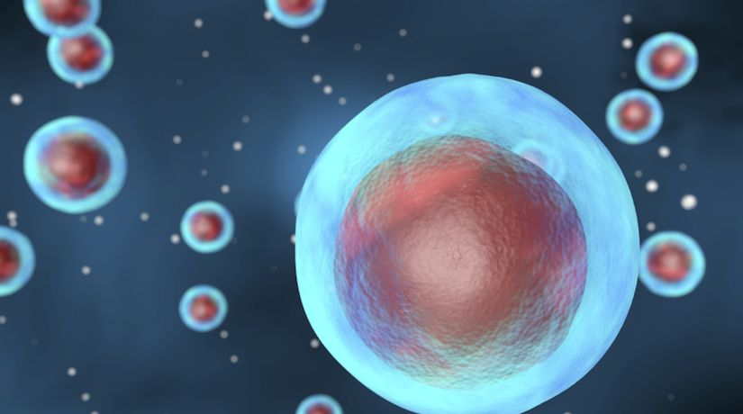

The concept of food has existed for as long as life. Life requires sustenance to survive. However, food has transcended beyond just being a basic need for humans. No longer did humans have to worry about food as they continued to innovate and innovate on its production. With that level reached, humans began to explore their foods, refining its tastes to their liking. With that, food became unique to each culture, holding specific meanings and traditional value.
Food was meaningful, and it was tasty. That is why I love it, but I cannot say the same in our current food climate. A diversity and mix of cultures exists in the U.S. Normally, I would have been excited to be given the opportunity to try each culture, but I can only say that the feeling has faded. How could I feel excited about food when the majority of the foods I see is processed foods?
Food shortages are a thing of the past for U.S. Americans. Ever since food companies figured out that our food could be industrialzed, the problem shifted from shortages to an abundance of processed foods, and the symptoms are quickly getting worse.

Sugar, which was once a rarity, has become far too commonplace because of innovations in technology. Food industries add sugar wherever they can add it in order to make it more palatable. Once you take that bite or sip, you get hooked and the likelihood of you purchasing more increases. Diabetes rates are soaring, yet food industries do not change their ways. They sacrifice your health for profit and blame it on the consumer for not being responsible for their intake when it is the food industries that make it hard to resist.